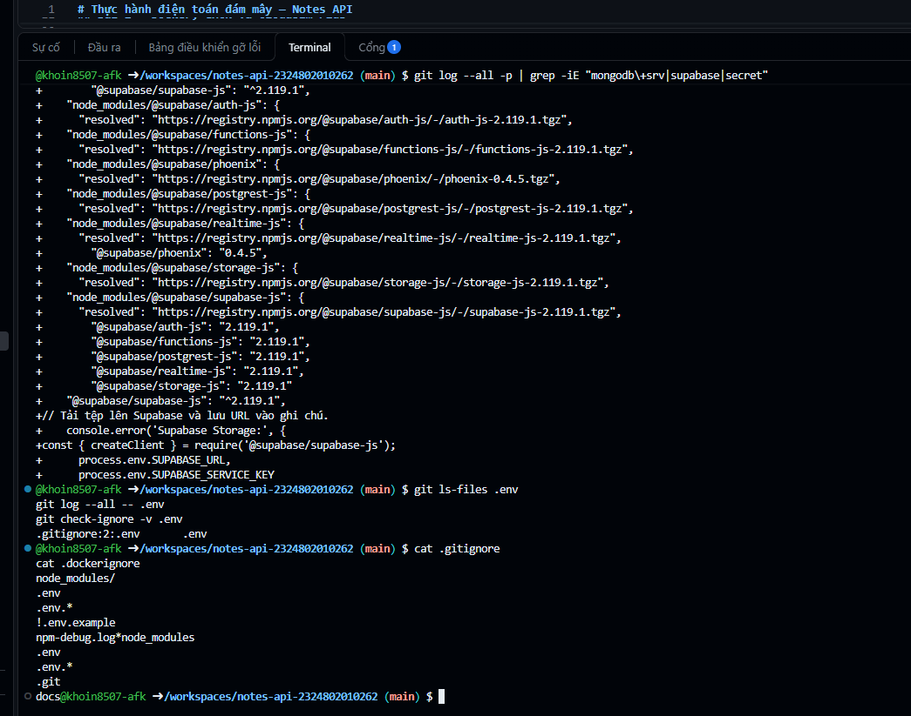
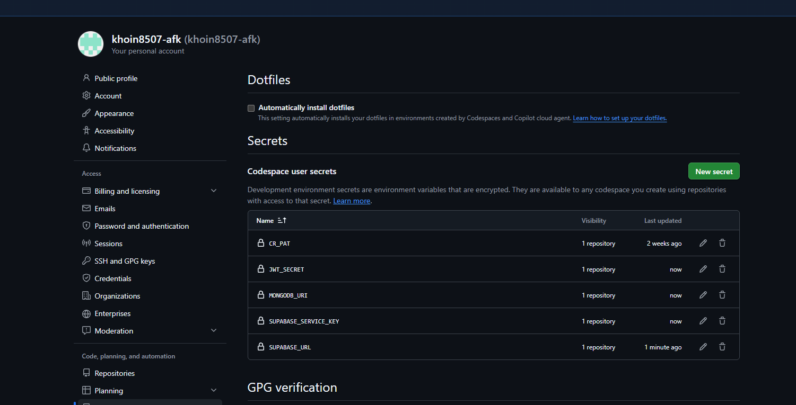
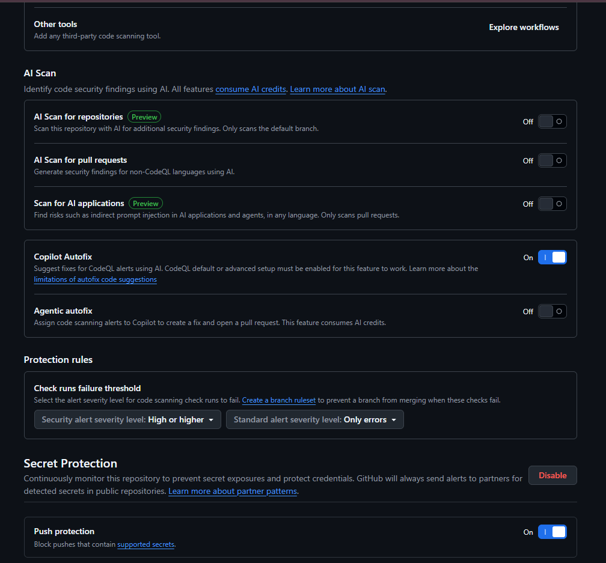
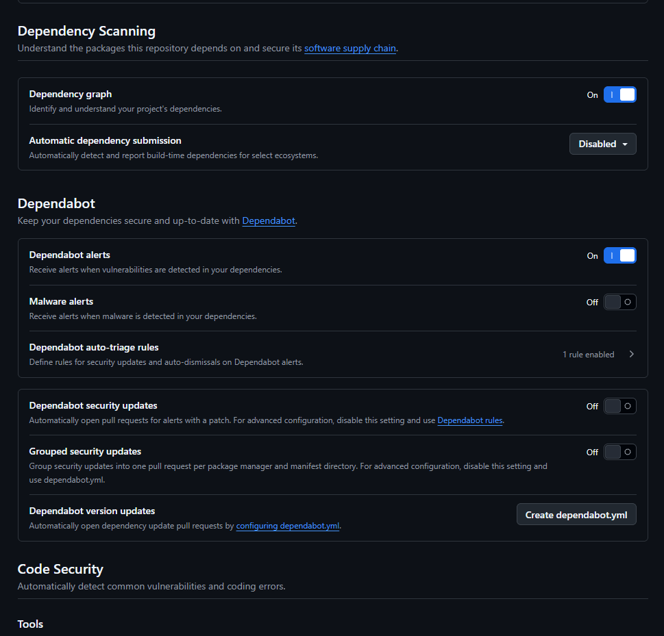
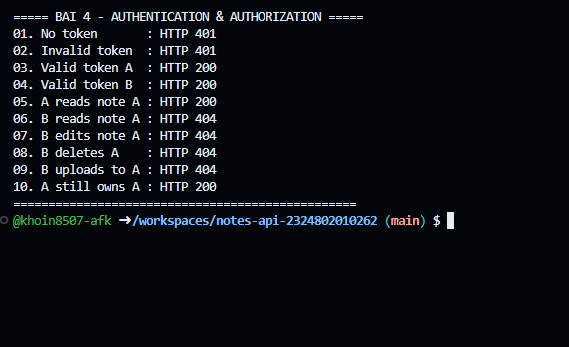
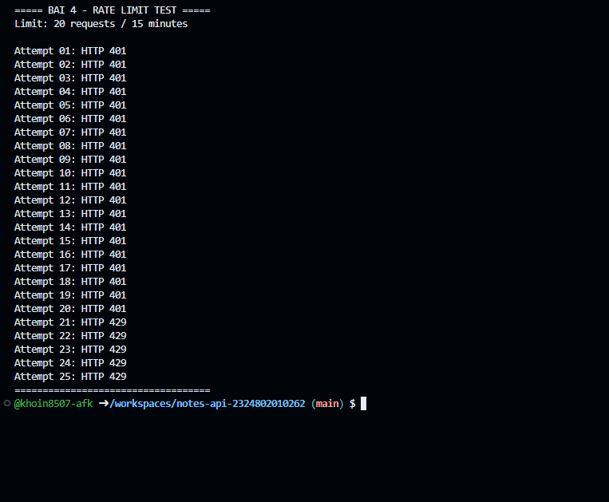
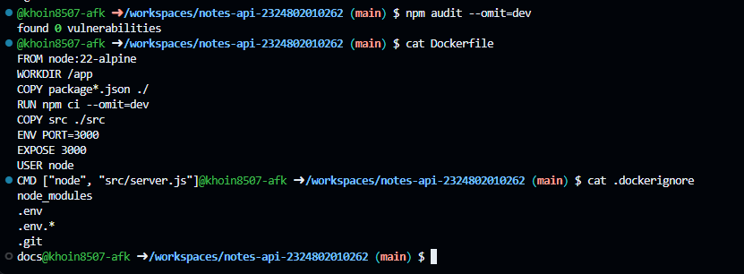
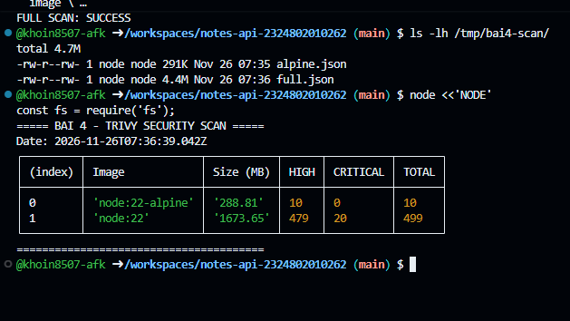
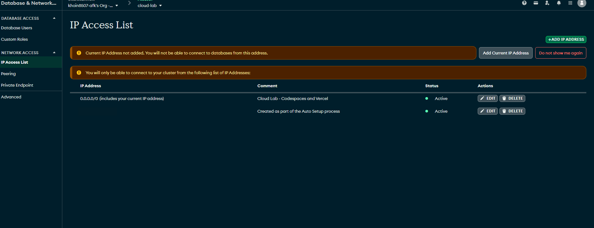

Bài 4. Bảo mật ứng dụng đám mây
Sinh viên Nguyễn Nguyên Khôi
MSSV 2324802010262 · Lớp D23CNTT03
Ngày thực hiện 26/11/2026
1. Mục tiêu
Bảo vệ Notes API kế thừa từ Bài 3 bằng quản lý bí mật trên đám mây, xác thực JWT và phân quyền theo chủ sở hữu. Kiểm tra lỗ hổng của thư viện và Docker image bằng npm audit, Dependabot và Trivy; đánh giá rủi ro khi mở Network Access của MongoDB Atlas. Bài thực hành gắn với CELO4.1, 4.2, 6.1.
2. Quản lý bí mật và cấu hình bảo mật (Phần A)
- Môi trường. GitHub Codespaces, Node.js 22.23.4, npm 10.9.9, Docker 29.9.3; MongoDB Atlas Free tại AWS Hong Kong và Supabase Storage từ Bài 3.
- Kiểm tra Git. Chạy
git log --all -p | grep -iE "mongodb\+srv|supabase|secret". Kết quả quan sát không phát hiện giá trị bí mật thật;git ls-files .envvàgit log --all -- .envkhông trả dòng nào. Cả .gitignore và .dockerignore loại trừ .env và .env.*. Đây là kiểm tra sơ bộ, không chứng minh mọi bí mật đều chưa từng bị lộ. - Codespaces Secrets. Tạo
MONGODB_URI,SUPABASE_URL,SUPABASE_SERVICE_KEY,JWT_SECRET. JWT secret được sinh bằng crypto.randomBytes(32), biểu diễn 64 ký tự hex. Sau Rebuild, bốn biến đều tồn tại, ba biến cũ khớp .env. Xóa .env và kiểm tra lại kết nối thành công sau khi sửa IP Access List. - GitHub. Dependency graph, Dependabot alerts, Secret Protection và Push protection đều bật. CR_PAT từ Bài 2 được giữ nguyên.
Minh chứng kiểm tra Git và Codespaces Secrets


Minh chứng cấu hình bảo mật GitHub


3. Xác thực và phân quyền (Phần B)
Cài đặt bcryptjs 3.0.3, jsonwebtoken 9.0.3, helmet 8.3.0 và express-rate-limit 8.7.5.
src/models/user.js: lưu email duy nhất và passwordHash; bcrypt sử dụng cost factor 10.src/routes/auth.js: đăng ký, đăng nhập, kiểm tra kiểu dữ liệu, giới hạn mật khẩu 72 byte và cấp JWT HS256 có thời hạn 1 giờ.src/middleware/auth.js: kiểm tra Bearer token, chữ ký, thời hạn và định dạng sub.src/routes/notes.js: bắt buộc JWT; truy vấn ghi chú theo owner và ID, gán owner từ JWT khi tạo, không nhận owner từ client.src/app.js: Helmet, giới hạn JSON 100 KB, sanitizeFilter, trust proxy = 1 và giới hạn 20 yêu cầu /auth trong 15 phút.src/server.js: kiểm tra biến môi trường cần thiết trước khi kết nối Atlas và lắng nghe cổng 3000.
3.1. Kiểm thử xác thực và quyền sở hữu
Hai tài khoản thử nghiệm A và B đăng nhập thành công. Đăng ký B trả 201, đăng ký trùng A trả 409. GET / trả 200. Ghi chú mới của A có trường owner; danh sách của B trả 200 với mảng rỗng. Các ghi chú mẫu cũ không thuộc hai người dùng mới.
| Trường hợp | Mong đợi | Kết quả quan sát |
|---|---|---|
| Không token | 401 | 401 · Đạt |
| Token không hợp lệ | 401 | 401 · Đạt |
| Token hợp lệ A | 200 | 200 · Đạt |
| Token hợp lệ B | 200 | 200 · Đạt |
| A đọc ghi chú A | 200 | 200 · Đạt |
| B đọc ghi chú A | 404 | 404 · Đạt |
| B sửa ghi chú A | 404 | 404 · Đạt |
| B xóa ghi chú A | 404 | 404 · Đạt |
| B upload vào ghi chú A | 404 | 404 · Đạt |
| A vẫn đọc được ghi chú A | 200 | 200 · Đạt |
| A upload tệp vào ghi chú A | 200 | 200 · Đạt |
| NoSQL Injection — email là đối tượng, mật khẩu ngắn | 401 | 401 · Đạt |
| NoSQL Injection — email là đối tượng, mật khẩu đủ độ dài | 401 | 401 · Đạt |
10/10 tình huống trong phép thử tổng hợp đạt yêu cầu. Ba phép thử bổ sung cũng đạt. A upload thành công và nhận attachmentUrl; B bị từ chối. Mã 404 không tiết lộ ghi chú của người khác có tồn tại hay không.
Minh chứng JWT và phân quyền

3.2. Giới hạn tần suất đăng nhập
Khởi động lại server để reset bộ đếm trong bộ nhớ, sau đó gửi 25 yêu cầu đăng nhập sai liên tiếp từ localhost, không gửi thêm yêu cầu /auth trước phép đo.
| Lần yêu cầu | HTTP | Số yêu cầu |
|---|---|---|
| 1–20 | 401 | 20 |
| 21–25 | 429 | 5 |
Lần 21 bắt đầu bị chặn đúng cấu hình 20 yêu cầu trong 15 phút. Phép thử xác nhận ngưỡng chặn, chưa đo thời điểm hết cửa sổ 15 phút.

4. Quét lỗ hổng (Phần C)
npm audit --omit=dev trả về 0 vulnerabilities. Dependabot có 0 cảnh báo mở và 0 cảnh báo đóng tại thời điểm kiểm tra trước khi push Bài 4; chưa phản ánh dependency mới chưa được push.
Minh chứng npm audit

Build hai image từ cùng mã nguồn và package-lock.json, chỉ thay base image từ node:22-alpine sang node:22 bằng Dockerfile.full. Cả hai cài dependency production bằng npm ci --omit=dev và chạy với USER node. Quét Trivy qua Docker, dùng cùng cache cơ sở dữ liệu, lọc HIGH và CRITICAL, xuất JSON rồi tổng hợp số phát hiện theo thành phần. Kích thước lấy từ docker image inspect, quy đổi byte sang MB thập phân.
4.1. Bảng so sánh Docker image
| Image | Kích thước (MB) | HIGH | CRITICAL | Tổng |
|---|---|---|---|---|
| node:22-alpine | 288,81 | 10 | 0 | 10 |
| node:22 | 1.673,65 | 479 | 20 | 499 |
Alpine giảm khoảng 82,74% kích thước và 98,00% số phát hiện HIGH/CRITICAL so với Full. Full lớn gấp khoảng 5,79 lần. Kết quả chỉ phản ánh các phát hiện của công cụ tại thời điểm quét, không chứng minh an toàn tuyệt đối.

4.2. Phân tích và ưu tiên xử lý
Trong Alpine 3.24.4, nhóm hệ điều hành có 0 HIGH và 0 CRITICAL; nhóm Node.js packages có 10 HIGH và 0 CRITICAL. npm audit và Trivy có phạm vi khác nhau; chưa xác định đường dẫn cài đặt cụ thể của từng package.
| Package | Phiên bản đang dùng | Số HIGH | Bản vá tham khảo theo Trivy |
|---|---|---|---|
| brace-expansion | 2.0.2 | 5 | 2.1.6 (nhánh 2.x) |
| ip-address | 10.1.0 | 1 | 10.3.1 |
| pacote | 19.0.2 và 20.0.1 | 2 | 21.5.1 |
| picomatch | 4.0.3 | 1 | 4.0.4 |
| sigstore | 3.1.0 | 1 | 4.1.1 |
CVE-2026-9496 xuất hiện ở hai phiên bản pacote, nên 10 phát hiện tương ứng 9 mã CVE khác nhau. Ưu tiên xem xét 20 phát hiện CRITICAL của Full, sau đó đánh giá khả năng khai thác, phạm vi ảnh hưởng và bản vá của các gói HIGH. Đề xuất tiếp tục dùng Alpine, cập nhật base image và quét lại sau khi kiểm thử tương thích; chưa thực hiện cập nhật trong phép đo này.
5. Phân tích quyết định có rủi ro (Phần D)
IP Access List ban đầu chỉ có một IP /32. Sau khi thêm 0.0.0.0/0, API kết nối lại thành công. Cấu hình cho phép mọi IPv4 thử kết nối tới cluster, nhưng vẫn phải xác thực và dùng TLS. Atlas xác nhận tài khoản notes_app có SCRAM và quyền readWrite@notes; tài khoản quản trị riêng có atlasAdmin@admin.
| Rủi ro cụ thể | Biện pháp bù trừ | Phương án tốt hơn |
|---|---|---|
| Mọi IPv4 có thể thử kết nối Atlas | Xác thực database user; mật khẩu ngẫu nhiên theo cấu hình bài thực hành | IP đi ra cố định và allowlist hẹp |
| Lộ thông tin kết nối | Codespaces Secrets, Git ignore, Push protection | Xoay vòng bí mật, quản lý secret tập trung |
| Tài khoản DB bị chiếm quyền | notes_app chỉ có readWrite trên notes | Phân quyền chi tiết hơn, bảo vệ tài khoản quản trị riêng |
| Nghe lén đường truyền | TLS bắt buộc của Atlas | TLS kết hợp Private Endpoint/VPC peering trên gói phù hợp |

Nên thu hẹp hoặc xóa quyền truy cập toàn mạng sau khi không còn cần dùng. Bucket attachments vẫn Public nên người có URL trực tiếp vẫn đọc được tệp; cần chuyển sang private bucket và URL ký có thời hạn nếu lưu dữ liệu riêng tư. Rate Limit hiện lưu trong bộ nhớ, chưa phù hợp cho nhiều instance. Cấu hình trust proxy cần kiểm tra khi triển khai thực tế.
6. Sự cố và cách khắc phục
| Sự cố | Phân tích và xử lý | Kết quả |
|---|---|---|
| MongooseServerSelectionError / ReplicaSetNoPrimary | Cả ba nút báo ERR_SSL_TLSV1_ALERT_INTERNAL_ERROR; thử 30 giây vẫn lỗi. Kiểm tra Atlas thấy IP Access List thiếu nguồn kết nối phù hợp; thêm 0.0.0.0/0. | npm start kết nối Atlas thành công, không cần tạo lại .env. |
| GET /notes trả 500, TypeError | Dán nhầm Notes Router vào src/models/note.js. Sao chép mã sang src/routes/notes.js rồi git restore src/models/note.js. | GET / trả 200; /notes thiếu token hoặc token sai trả 401. |
7. Trả lời câu hỏi phản biện
Nếu JWT bị lộ trong một giờ còn hiệu lực? Máy chủ hiện chỉ xác minh chữ ký và hạn dùng, không có cơ chế thu hồi từng token. Người có token có thể mạo danh chủ sở hữu cho tới khi hết hạn. Đổi JWT_SECRET vô hiệu hóa toàn bộ token cũ nhưng buộc mọi người đăng nhập lại. Có thể dùng access token ngắn hạn kết hợp refresh token có thể thu hồi; nếu cần thu hồi access token ngay, dùng denylist theo jti hoặc dấu vân tay token cho tới khi hết hạn. Chi phí là lưu trạng thái, thêm truy vấn và độ phức tạp quản lý phiên.
Vì sao Alpine thường có ít lỗ hổng hơn? Alpine tối giản, ít gói hệ thống và dùng musl/BusyBox thay cho nhiều thành phần của Debian đầy đủ. Trong phép đo, Alpine có 10 HIGH và 0 CRITICAL, Full có 479 HIGH và 20 CRITICAL. Số lượng phát hiện thấp không đồng nghĩa an toàn tuyệt đối; cần xem mức độ, khả năng khai thác, phạm vi sử dụng, dữ liệu CVE và bản vá. Cần cập nhật và quét lại định kỳ.
Trách nhiệm chia sẻ giữa nhà cung cấp và nhóm phát triển? MongoDB Atlas và Supabase quản lý hạ tầng vật lý, nền tảng dịch vụ, cập nhật thành phần được quản lý và cung cấp cơ chế TLS, xác thực, quyền truy cập. Nhóm phát triển chịu trách nhiệm cấu hình IP Access List, database user, bucket, bí mật, JWT, bcrypt, phân quyền owner, kiểm tra đầu vào, Docker image, dependency và xử lý lỗ hổng. Nhà cung cấp cung cấp cơ chế bảo mật nhưng không thay nhóm kiểm tra logic ứng dụng.
8. Kết luận
Hoàn thành các điểm kiểm tra kỹ thuật: kiểm tra sơ bộ Git, chuyển bí mật vào Codespaces Secrets và bật Push Protection; 10/10 phép thử tổng hợp JWT và owner đúng kỳ vọng; 25/25 yêu cầu đăng nhập cho mã HTTP đúng với ngưỡng chặn; npm audit không phát hiện lỗ hổng, Trivy cung cấp bảng so sánh hai image. Hai sự cố thực tế được khắc phục. Hạn chế còn lại là IP Access List rộng, bucket công khai, JWT chưa thu hồi riêng lẻ và các phát hiện HIGH cần xử lý. Báo cáo ghi nhận kết quả tại thời điểm thực hành, chưa xác nhận trạng thái sau commit và push Bài 4.